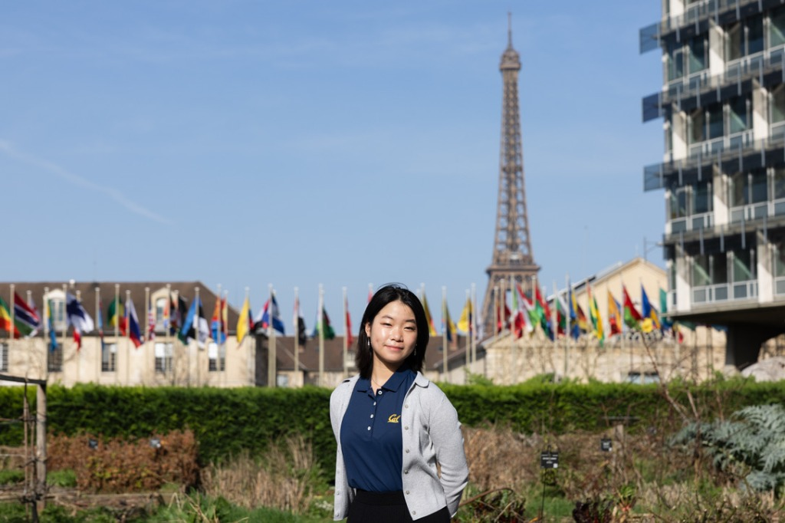

Isabelle Athena Qian
Senior at UC Berkeley, studying Computer Science, Philosophy, and German Studies, with a minor in Public Policy.

My research focuses on AI governance and safety—from proving mathematical tradeoffs between an agent's value alignment and accuracy, to auditing how language models answer legal questions and tracking state legislation. Outside the lab, I teach lower-division mathematics, mentor first-year computing students, and help coordinate the IASEAI conference at the Paris UNESCO House. When I step away from my desk, you will likely find me training with Berkeley’s equestrian team, baking low-sugar bread, or documenting treats on @foodie.atcal, and practicing Chinese calligraphy.
isabelle.qian@gmail.com
· LinkedIn
· Resume
An Interdisciplinary Bridge
My work centers on the synthesis of technical computer science, analytic philosophy, and comparative policy. At UC Berkeley, I look at artificial intelligence not merely as standalone code or abstracted theory, but through the joint lens of mathematical safety bounds, philosophical semantics, and institutional accountability.
I am honored to be the recipient of the 2026 Samuel Silver Memorial Scholarship from the UC Berkeley EECS Department—awarded to a single student combining intellectual achievement in science with serious humanistic inquiry.
Outside of formal research, I care deeply about mentorship and community. I teach mathematics in the Department of Mathematics, mentor first-year engineering students in the College of Computing, Data Science, and Society (CDSS), and co-captain the Cal Equestrian team.
I speak English, Mandarin, and German.
Academic background
- B.A. Computer Science, UC Berkeley. GPA 3.979/4.0.
- B.A. Philosophy. Epistemology, mind, and formal semantics.
- B.A. German Studies. Comparative and transatlantic governance.
- Minor in Public Policy, Goldman School of Public Policy.
Tools I use include Python, Java, R, SQL, NumPy, Pandas, scikit-learn, Hugging Face, Streamlit, and ETL pipelines.
Selected Projects
Selected work across formal AI safety decision theory, legislative tracking systems, and responsible AI education.
A Decision-Theoretic Approach for Managing Misalignment
Isabelle Qian · IASEAI 2026, peer-reviewed · arXiv:2512.15584
I authored a peer-reviewed study proposing a formal decision-theoretic framework for AI safety that quantifies the tradeoffs between an agent's value alignment and its epistemic accuracy. The paper mathematically proves that context-specific delegation to misaligned models is rational under specific capability thresholds, shifting safety from idealistic alignment to principled risk management.
- Quantifies Pareto frontiers between model accuracy and alignment drift, identifying capability thresholds where task delegation remains strictly rational.
- Introduces mathematical constraints for model oversight in high-stakes operational environments.
PDF on arXiv
Real-Time AI Legislation Tracker and Forensic Compliance Analysis
ETL architecture and Gemini pipeline · UC Berkeley · 50+ bills tracked
I engineered an automated ETL pipeline integrating LegiScan and SerpApi to monitor more than 50 active US state and federal artificial intelligence bills and media discourse. Using custom prompt engineering with Google Gemini 3 Flash, the system autonomously summarizes dense legal statutes into actionable compliance frameworks and displays them in a cached Streamlit dashboard.
- Continuously indexes statutory changes and coalition positions across 50+ active bills.
- Converts complex legislative mandates into structured stakeholder and risk matrices.
GenAI Learning Exercises in “Brilliance of Berkeley”
Curriculum design · UC Berkeley VPUE
I designed multimodal generative AI exercises for a 20-student beta cohort within an 850-student class to evaluate how undergraduates responsibly interact with model outputs. Through qualitative interviews across varied academic disciplines, I gathered participant feedback to refine the learning modules and published the final findings in a university report.
- Evaluated student discernment across AI summaries, infographics, and study notes.
- Distributed through Berkeley Undergraduate Education to shape campus-wide guidance.
VPUE report
Research Appointments
Empirical audits, legal analysis, policy frameworks, and economic research across UC Berkeley departments.
Research Assistant, AI Governance and Auditing
June 2025 – present · UC Berkeley School of Information
Accepted paper at the AI for Law Scholars Conference 2026: conducted a longitudinal empirical audit of LLMs evaluating answers to complex legal questions, developed a court case benchmark, and designed annotation schemas.
Executed landscape analysis of California AI legislation synthesizing “sociotechnical imaginaries” under Professor Deirdre Mulligan. Compiled a 100+ policy AI governance library under Eric Hysen (former DHS Chief AI Officer), and researched 30+ US data infrastructures to create a field guide under Denice Ross (former U.S. Chief Data Scientist).
Research Assistant, Paper Prisons Initiative
September 2025 – May 2026 · UC Berkeley School of Law
Supported Professor Colleen Chien in legal and policy research on intellectual property, artificial intelligence, algorithmic pricing, and criminal justice reform. Designed research methods integrating legal frameworks with data-driven insights and coordinated a team of research assistants.
Undergraduate Research Assistant, Economics and Finance
September 2023 – May 2025 · UC Berkeley Haas School of Business
Independently managed research for a new book under Professor Ulrike Malmendier. Synthesized over 100 academic sources on financial development, legal institutions, and politics, contributing multidisciplinary insights on experience effects.
Leadership and Instruction
Global summit coordination, university mathematics instruction, student advocacy, and equestrian leadership.
Associate Project Manager, Global AI Summit
January 2026 – present · IASEAI, Paris UNESCO House
Orchestrate administrative logistics for IASEAI’26 at Paris UNESCO House, managing communications and on-site facilitation for 1,500+ global AI researchers and policymakers. Designed tracking systems for 12 specialized workshops and spearheading digital infrastructure and the conference playbook for IASEAI’27.
Undergraduate Student Instructor
July 2024 – August 2026 · UC Berkeley Department of Mathematics
Taught the Foundations of Lower Division Mathematics course (20 hours weekly), instructing across 13 pre-calculus and quantitative topics. Developed educational materials fostering problem-solving skills and equitable learning accessibility.
Student Advisor and AI Working Group Member
September 2024 – present · Vice Provost for Undergraduate Education
Serve on the Educating in the Age of AI Working Group shaping campus-wide AI strategy. Co-authored An Incoming UC Berkeley Undergraduate Student’s Guide to AI.
First Year Mentor
September 2024 – present · College of Computing, Data Science, and Society
Mentored incoming computing students, navigating complex curriculum challenges. Honored with both the Best First Year Mentor and Best Cohort Award for advocacy and student support.
Co-Captain and Competition Team Member
2023 – present · UC Berkeley Equestrian Team
Lead team operations and sponsorship pipelines to support finances. Recognized as Year-End High Point Rider (USHJA/IHSA).
President, Blackwell Hall Association
September 2023 – May 2025
Managed a $10K budget and coordinated hall-wide social and educational programs for 775 residents. Awarded Hall Association of the Year and the Residential Life Vukasin Leadership Award.
Credentials and Honors
Download resume (PDF)
Honors
-
2026 Samuel Silver Memorial Scholarship (EECS).
Awarded to a single student combining science with serious humanistic inquiry.
-
Dean’s Honor List, Fall 2023 – Spring 2026.
Top 10% of undergraduates every consecutive semester (L&S and CDSS).
-
Year-End High Point Rider (USHJA/IHSA).
Collegiate competition circuit recognition.
-
Best First Year Mentor and Best Cohort (CDSS 2025).
For student advocacy and peer mentorship.
Coursework
Computer science and systems.
Agentic AI, Machine Learning, Principles and Techniques of Data Science, Discrete Math, Probability Theory, Data Structures and Algorithms, Language after LLM, Engineering Responsible Systems, Machine Structures, Internet Architecture, User Interface Design.
Philosophy and semantics.
Analytic Philosophy, Philosophy of Mind, Theory of Meaning, Logic, Formal Epistemology.
Beyond the lab
Cal Equestrian co-captain.
Leading team operations and sponsorships while competing on the USHJA/IHSA collegiate circuit.
Baking.
Self-taught, formulating low-sugar Asian baked goods (shokupan, milk buns). Food notes on @foodie.atcal.
Chinese calligraphy.
Practicing Seal Script and Ouyang Xun Regular Script.